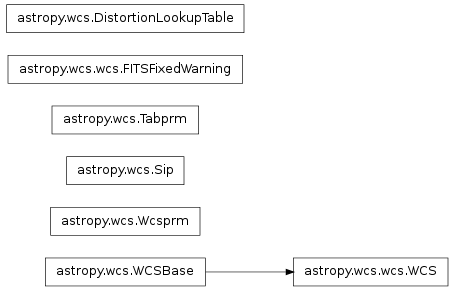

astropy.wcs contains utilities for managing World Coordinate System (WCS) transformations in FITS files. These transformations map the pixel locations in an image to their real-world units, such as their position on the sky sphere.
It is at its base a wrapper around Mark Calabretta’s wcslib, but also adds support for the Simple Imaging Polynomial (SIP) convention and table lookup distortions as defined in WCS Paper IV. Each of these transformations can be used independently or together in a standard pipeline.
The basic workflow is as follows:
- from astropy import wcs
- Call the WCS constructor with an astropy.io.fits header and/or hdulist object.
- Optionally, if the FITS file uses any deprecated or non-standard features, you may need to call one of the fix methods on the object.
- Use one of the following transformation methods:
- all_pix2world: Perform all three transformations from pixel to world coordinates.
- wcs_pix2world: Perform just the core WCS transformation from pixel to world coordinates.
- wcs_world2pix: Perform just the core WCS transformation from world to pixel coordinates.
- sip_pix2foc: Convert from pixel to focal plane coordinates using the SIP polynomial coefficients.
- sip_foc2pix: Convert from focal plane to pixel coordinates using the SIP polynomial coefficients.
- p4_pix2foc: Convert from pixel to focal plane coordinates using the table lookup distortion method described in Paper IV.
- det2im: Convert from detector coordinates to image coordinates. Commonly used for narrow column correction.
This example loads a FITS file (supplied on the commandline) and uses the WCS cards in its primary header to transform.
# Load the WCS information from a fits header, and use it
# to convert pixel coordinates to world coordinates.
from __future__ import division # confidence high
import numpy
from astropy import wcs
from astropy.io import fits
import sys
# Load the FITS hdulist using astropy.io.fits
hdulist = fits.open(sys.argv[-1])
# Parse the WCS keywords in the primary HDU
w = wcs.WCS(hdulist[0].header)
# Print out the "name" of the WCS, as defined in the FITS header
print w.wcs.name
# Print out all of the settings that were parsed from the header
w.wcs.print_contents()
# Some pixel coordinates of interest.
pixcrd = numpy.array([[0,0],[24,38],[45,98]], numpy.float_)
# Convert pixel coordinates to world coordinates
# The second argument is "origin" -- in this case we're declaring we
# have 1-based (Fortran-like) coordinates.
world = w.wcs_pix2world(pixcrd, 1)
print world
# Convert the same coordinates back to pixel coordinates.
pixcrd2 = w.wcs_world2pix(world, 1)
print pixcrd2
# These should be the same as the original pixel coordinates, modulo
# some floating-point error.
assert numpy.max(numpy.abs(pixcrd - pixcrd2)) < 1e-6
This example, rather than starting from a FITS header, sets WCS values programmatically, uses those settings to transform some points, and then saves those settings to a new FITS header.
# Set the WCS information manually by setting properties of the WCS
# object.
from __future__ import division # confidence high
import numpy
from astropy import wcs
from astropy.io import fits
import sys
# Create a new WCS object. The number of axes must be set
# from the start
w = wcs.WCS(naxis=2)
# Set up an "Airy's zenithal" projection
# Vector properties may be set with Python lists, or Numpy arrays
w.wcs.crpix = [-234.75, 8.3393]
w.wcs.cdelt = numpy.array([-0.066667, 0.066667])
w.wcs.crval = [0, -90]
w.wcs.ctype = ["RA---AIR", "DEC--AIR"]
w.wcs.set_pv([(2, 1, 45.0)])
# Print out all of the contents of the WCS object
w.wcs.print_contents()
# Some pixel coordinates of interest.
pixcrd = numpy.array([[0,0],[24,38],[45,98]], numpy.float_)
# Convert pixel coordinates to world coordinates
world = w.wcs_pix2world(pixcrd, 1)
print world
# Convert the same coordinates back to pixel coordinates.
pixcrd2 = w.wcs_world2pix(world, 1)
print pixcrd2
# These should be the same as the original pixel coordinates, modulo
# some floating-point error.
assert numpy.max(numpy.abs(pixcrd - pixcrd2)) < 1e-6
# Now, write out the WCS object as a FITS header
header = w.to_header()
# header is an astropy.io.fits.Header object. We can use it to create a new
# PrimaryHDU and write it to a file.
hdu = fits.PrimaryHDU(header=header)
hdu.writeto('test.fits')
astropy.wcs contains utilities for managing World Coordinate System (WCS) transformations in FITS files. These transformations map the pixel locations in an image to their real-world units, such as their position on the sky sphere.
It is at its base a wrapper around Mark Calabretta’s wcslib, but also adds support for the Simple Imaging Polynomial (SIP) convention and table lookup distortions as defined in WCS Paper IV. Each of these transformations can be used independently or together in a standard pipeline.
| UnitConverter(*args, **kwargs) | Deprecated since version 0.2. |
| find_all_wcs(header[, relax, keysel]) | Find all the WCS transformations in the given header. |
| DistortionLookupTable | Represents a single lookup table for a Paper IV distortion transformation. |
| FITSFixedWarning | The warning raised when the contents of the FITS header have been modified to be standards compliant. |
| Sip | The Sip class performs polynomial distortion correction using the SIP convention in both directions. |
| Tabprm | A class to store the information related to tabular coordinates, i.e., coordinates that are defined via a lookup table. |
| WCS([header, fobj, key, minerr, relax, ...]) | WCS objects perform standard WCS transformations, and correct for SIP and Paper IV table-lookup distortions, based on the WCS keywords and supplementary data read from a FITS file. |
| Wcsprm | Wcsprm is a direct wrapper around wcslib. It |

wcslib is licenced under the GNU Lesser General Public License.